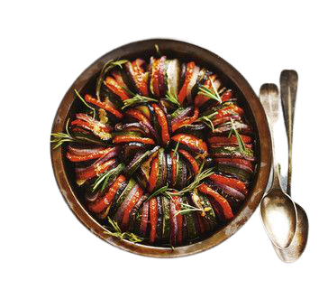

Pão de queijo vegano
Ingredientes:
- 1 xícara de chá de batata cozida;
- 2 xícaras de chá de polvilho doce;
- 1/2 xícara de chá de polvilho azedo;
- 1/2 xícara de chá de água morna;
- 1/3 de xícara de chá de azeite;
- sal a gosto.
Modo de Fazer:
30 minutos
- Em um recipiente, coloque a batata cozida e amasse bem com um garfo até ficar um purê bem macio;
- Adicione os ingredientes líquidos: o azeite e a água morna. Misture;
- Acrescente o polvilho doce, o salgado e o sal. Misture bem com as mãos;
- Pegue porções da massa e molde em bolinhas pequenas;
- Em uma forma untada com óleo, disponha as bolinhas com uma distância entre elas e leve ao forno preaquecido a 230 ºC por cerca de 15 minutos;
- Agora é só servir. Bom apetite!
Nuggets vegano
Ingredientes:
Massa
- 4 batatas;
- 1 lata de milho verde;
- 1 lata de ervilha;
- 1/2 cebola;
- 1 dente de alho;
- 4 colheres de sopa de cheiro-verde;
- 1 colher de chá de sal;
- pimenta-do-reino a gosto;
- 1/2 colher de chá de cominho em pó;
- 1/2 colher de chá de cúrcuma em pó;
- farinha de milho;
- óleo.
Modo de Fazer:
40 minutos
- Em uma tigela, coloque as batatas cozidas e amassadas, o milho, a ervilha, a cebola ralada, o alho triturado, o cheiro-verde, o sal, a pimenta, o cominho, a cúrcuma e misture muito bem;
- Adicione a farinha de milho aos poucos até dar o ponto de moldar os nuggets;
- Passe os nuggets na farinha de milho e distribua em uma forma untada com óleo;
- Leve para assar em forno preaquecido a 180°C até ficarem douradinhos.
Ratatouille

Ingredientes:
- 1 berinjela;
- 1 abobrinha;
- 3 tomates não muito grandes;
- 1 copo de passata (purê de tomate) ou de molho de tomate;
- 1 cebola pequena;
- 3 dentes de alho;
- Sal e pimenta do reino a gosto.
Modo de Fazer:
40 minutos
- Comece colocando o molho de tomate ou a passata num refratário que possa ir ao forno;
- em seguida pique em pedaços bem pequenos a cebola e o alho e misture ao molho de tomate, adicione sal a gosto e uma pitada de pimenta;
- Corte em rodelas com aproximadamente a mesma espessura o tomate, a abobrinha e a berinjela;
- Após cortar os ingredientes é hora de posicioná-los na forma, para isso vá intercalando-os até completar todo o espaço, coloque um pouco de sal e pimenta sobre os legumes;
- Cubra com papel manteiga ou papel laminado e leve ao forno médio pré-aquecido por meia hora;
- Está pronto, bom apetite!